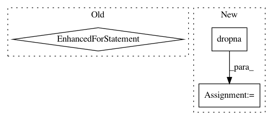

72cdace0d8b96567f5e4b6cb42dc5f745c88c617,nilmtk/api.py,API,test_jointly,#API#,244
Before Change
test_mains=next(test.buildings[building].elec.mains().load(physical_quantity="power", ac_type=self.power["mains"], sample_period=self.sample_period))
appliance_readings=[]
for appliance in self.appliances:
test_df=next((test.buildings[building].elec[appliance].load(physical_quantity="power", ac_type=self.power["appliance"], sample_period=self.sample_period)))
appliance_readings.append(test_df)
if self.DROP_ALL_NANS:
test_mains, appliance_readings = self.dropna(test_mains, appliance_readings)
After Change
test.set_window(start=d[dataset]["buildings"][building]["start_time"],end=d[dataset]["buildings"][building]["end_time"])
test_mains=next(test.buildings[building].elec.mains().load(physical_quantity="power", ac_type="apparent", sample_period=self.sample_period))
if self.DROP_ALL_NANS and self.site_only:
test_mains, _= self.dropna(test_mains,[])
if self.site_only != True:
appliance_readings=[]
In pattern: SUPERPATTERN
Frequency: 3
Non-data size: 3
Instances
Project Name: nilmtk/nilmtk
Commit Name: 72cdace0d8b96567f5e4b6cb42dc5f745c88c617
Time: 2021-01-06
Author: faizanzahid09@hotmail.com
File Name: nilmtk/api.py
Class Name: API
Method Name: test_jointly
Project Name: nilmtk/nilmtk
Commit Name: 720e035944157e9f885abed8be550b08c0ab7161
Time: 2014-07-10
Author: jack-list@xlk.org.uk
File Name: nilmtk/metrics.py
Class Name:
Method Name: rms_error_power
Project Name: nilmtk/nilmtk
Commit Name: 720e035944157e9f885abed8be550b08c0ab7161
Time: 2014-07-10
Author: jack-list@xlk.org.uk
File Name: nilmtk/metrics.py
Class Name:
Method Name: mean_normalized_error_power